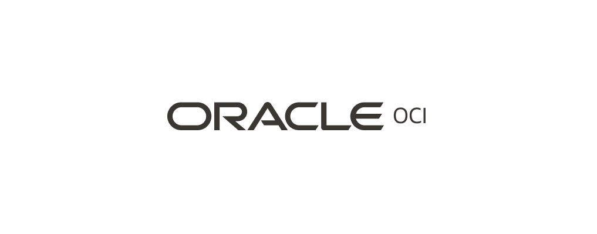

I joined the OCI Database-as-a-Service org in 2020. The work is around the Database console — the surface database administrators and fleet operators use to run their day. The user sitting on the other side of these screens isn't a casual visitor; they're someone who lives in this tool.
That changes the UX problem in interesting ways. Density beats whitespace. A click saved compounds across thousands of operations. The interface has to disappear so the work can show. Most of what I think about, day to day, is how to make a tool an operator already knows feel like it's quietly getting out of the way.
Most artifacts are under NDA. Sanitized walkthroughs are available on request — and the linked PDFs below capture what I can share publicly.
Principal UX Designer on the DBaaS team.
Designing for Cloud Console OCI Database Admin journeys has taught me to solve for complex systems outside just the digital space.
A few of the DBaaS surfaces I've worked on. Each one is a different kind of UX problem — but the through-line is the same: study how the operator actually works, then design the console around their job, not around the database's data model. Click any project below for the longer story.
GoldenGate Veridata is the tool DBAs use to compare and reconcile data between source and target databases during replication. The console had been carrying years of accumulated IA — admins were doing four jobs (configure, run, monitor, repair) inside one undifferentiated surface.
The interesting question wasn't "how do we modernise the look" — it was "what is the admin actually trying to do, and is the IA shaped around it?" Reframing the problem as four distinct jobs changed everything that came after.
Re-anchored the IA around the four jobs instead of the legacy menu. Pressure-tested every flow against the user under incident conditions, not the one running a clean demo. Cleaned the visual language up to RDS while keeping the dense-table affordances admins actually rely on.
For an operator-grade tool, density isn't a problem to solve — it's a feature to design around. Stripping it for the sake of "clean" is a beginner move.
Fill in: a moment from the work that proved this — a user observation, a pattern that travelled, a pushback that turned out to be right.
StoryAutonomous Database has multiple promotional offers running at any time — different SKUs, regions, customer tiers. The console was either showing all of them (overwhelming) or none (revenue left on the table). Admins kept missing things they were eligible for.
A "promotion" isn't a UI element. It's a small system with eligibility, priority, dismissal state, repetition rules. Once you treat it that way, the design follows; treat it as a banner and you fight the same problem on every page.
Designed a priority + dismissal model so a high-impact offer outranks a low-impact one, and the same offer doesn't shout at the same admin five screens in a row. Reusable pattern, not per-page custom work.
The hardest UX problems hide as "just a banner." Recognising when a small interface element is actually a system is half the job.
Fill in: a specific moment — e.g. an unexpected edge case the system handled, or a downstream team that picked up the pattern.Spatial Studio sits between the database and analysts who want to ask geographic questions of their data. The catch: most users aren't trained spatial analysts. They're business users with a map and a question.
The user we were designing for wasn't the spec's user. The spec assumed a trained spatial analyst; the actual user was a business analyst with a question and a map. Designing for that gap is most of the work.
Simple defaults that produce a useful map in one click. Deeper spatial controls hidden behind progressive disclosure for the moment a user is ready for them. Familiar shell so anyone moving between DB tools doesn't relearn the console.
Design for the user who'd never have asked for the tool. The expert can find the depth; the curious user is who you lose if the on-ramp is wrong.
Fill in: a moment from a user session, or a default that turned out to be the right one.Graph Studio gives analysts a way to explore graph data — relationships, paths, communities — without writing graph query languages by hand. The previous version asked too much technical fluency from the user.
The hard part isn't the visual canvas. It's choosing the right abstraction layer between "click and explore" and "write your own Cypher" — and making sure neither user feels punished for landing where they did.
Visual canvas with progressive depth. A curious analyst gets value in one click; an advanced user can drop into the underlying query whenever they want. Same shell as the rest of the DB tools, so the console feels like one product across services.
The right abstraction is the one that gives value at the shallow end and never traps you at the deep end. Most failed analytics tools fail one of those two tests.
Fill in: a moment from beta — a user who reached an unexpected insight, or feedback that surprised the team.Read more here.